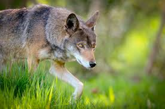
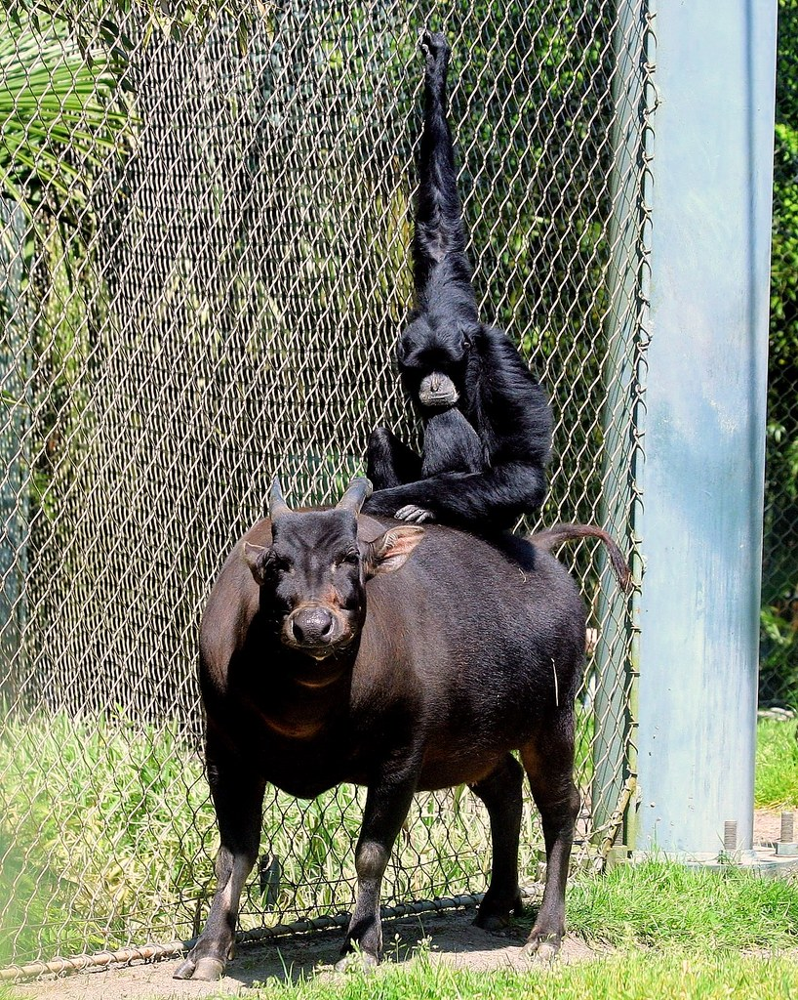
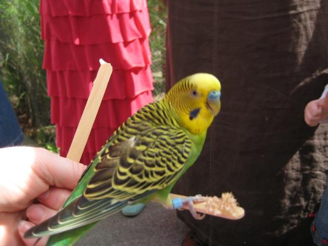

| ROCKY SHORES | PACIFIC SEAS | ARCTIC TUNDRA |
|---|---|---|
 |
 |
 |
Go see their seabirds! They have horned and tufted puffins, as well as common Murres! |
Go check out the Pacific seas aquarium, home to sea turtles, jellyfish, soldierfish, and Hammerhead Sharks. As well as otheer pacific ocean natives such as the Giant Pacific Octopus! |
Many residents of the arctic tundra can be found here, such as Muskox, Polar Bears, and arctic foxes! |
| RED WOLF WOODS | ASIAN FOREST SANCTUARY | BUDGIE BUDDIES |
|---|---|---|
|  |  |  |
Go see their Red wolf exhibit. These wolves are nearly extinct, with 40 in the wild and 261 in captivity. PDZA is part of a program to help restore their population! |
This exhibit is home to tigers, tapirs, elephants, siamangs, and more! You can here from their keepers everyday at 12:30. Come learn more about these wonderful creatures today! |
Experience what it's like to feed a budgie! They are very social and will love to see you! |